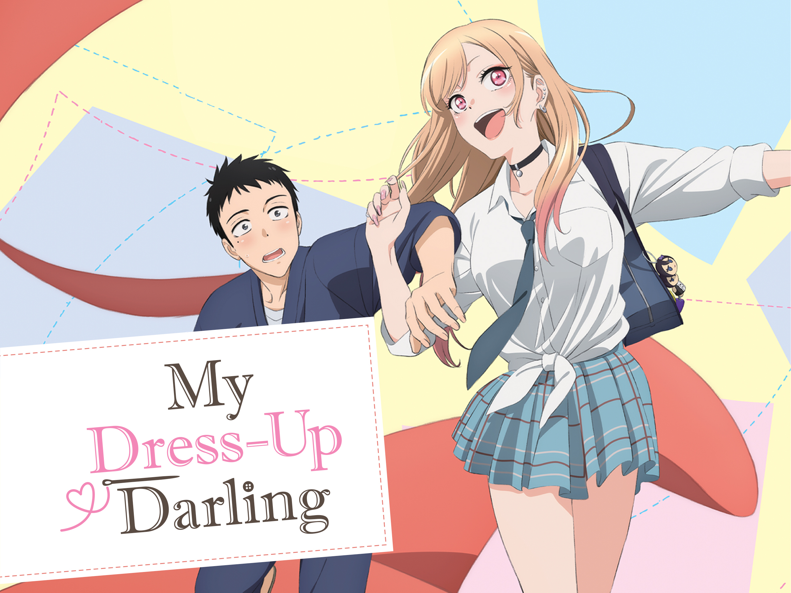
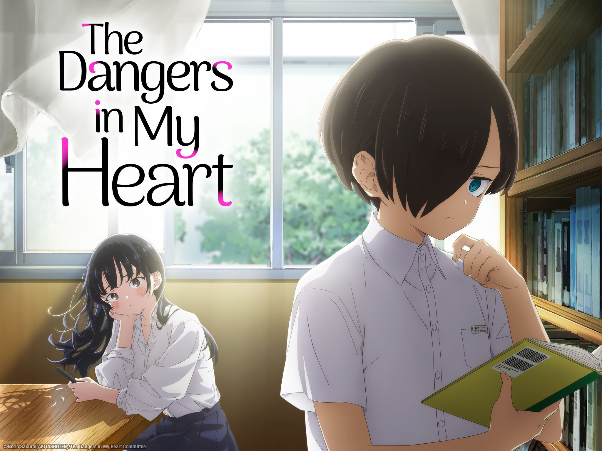
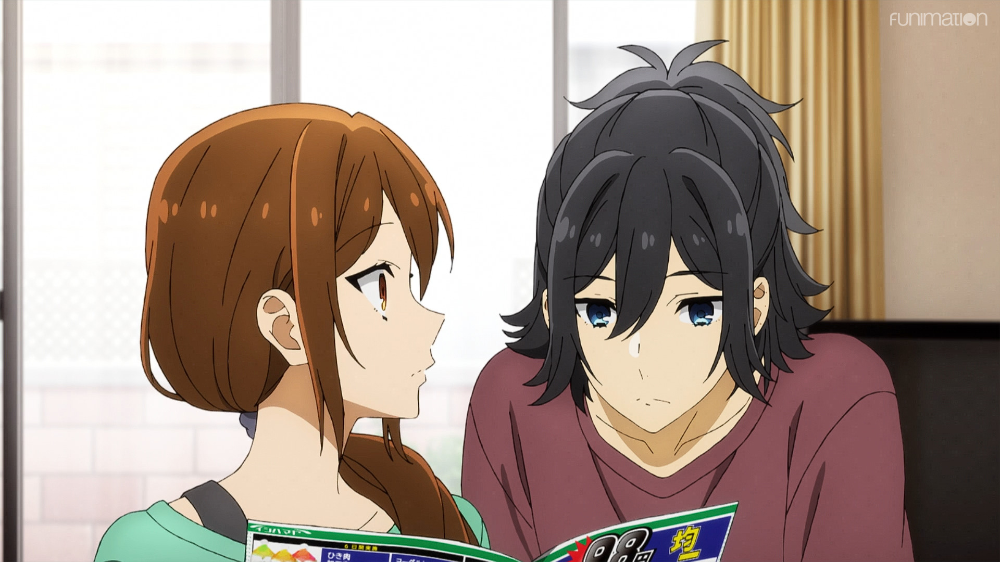
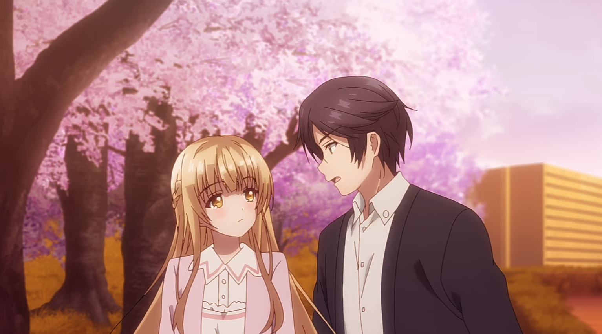
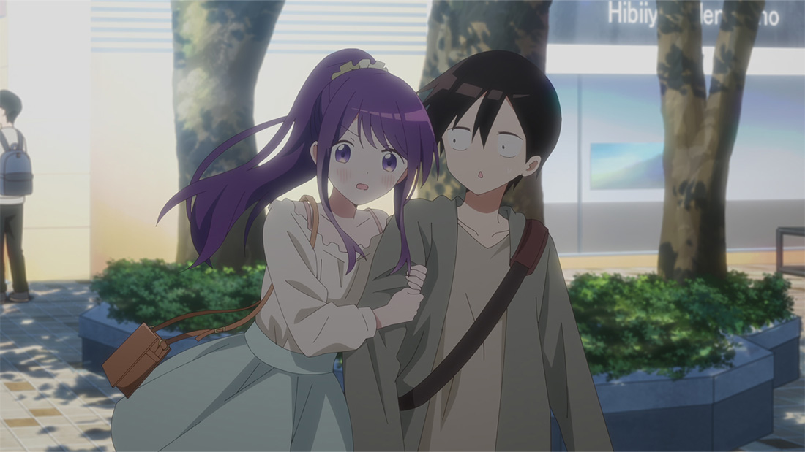
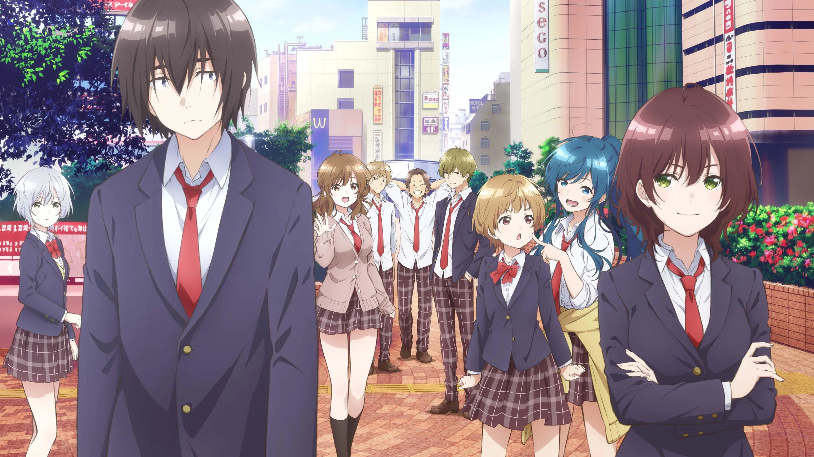
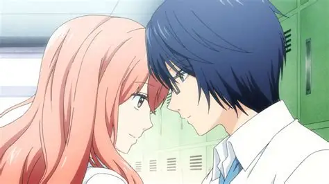
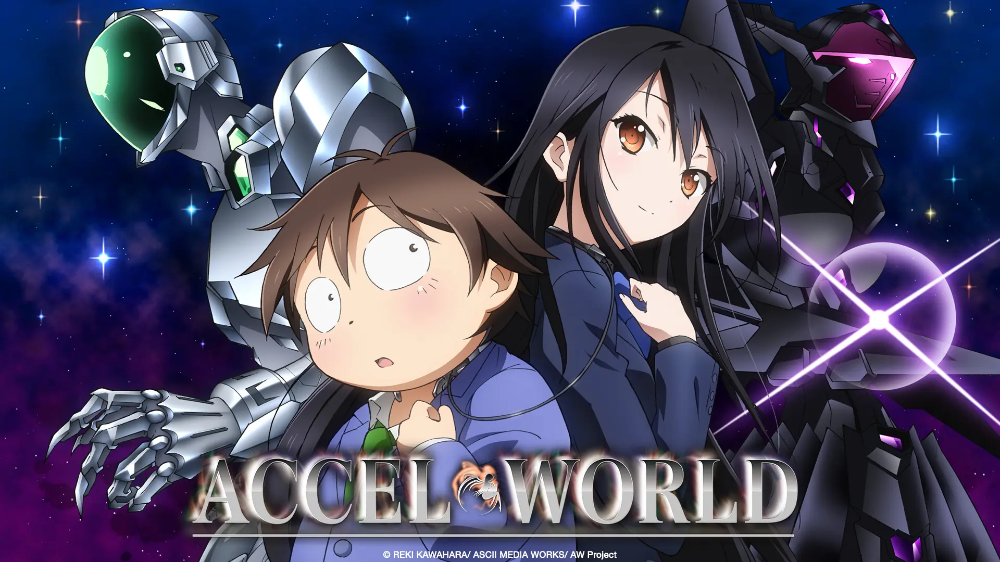

SMASH Senpai
Top 10 Romance Anime Where the Popular Girl Falls in Love With the Quiet Boy
Not all romance anime are about confident male leads winning hearts. Sometimes the most powerful love stories are about the quiet boy everyone overlooks and the outgoing girl who sees him for who he really is.
These anime focus on introverted, shy, or socially awkward boys whose lives change when an expressive, popular, or extroverted girl enters their world. In many of these stories, the girl is the one who notices first — the one who reaches out.
What makes these romances special isn’t grand gestures or dramatic confessions. It’s small moments. Shared silence. Awkward conversations. And the slow realization that love doesn’t always come from being loud or impressive.
From wholesome and comforting to emotionally intense and awkwardly sweet, these anime prove that even the quietest boys can become someone’s entire world.
These are the Top 10 Romance Anime Where the Popular Girl Falls in Love With the Quiet Boy — stories that are relatable, emotional, and deeply satisfying to watch unfold.
Sponsored
#1 My Dress-Up Darling
My Dress-Up Darling is one of the clearest examples of a romance anime where a quiet, introverted boy is pulled into the spotlight by an energetic, confident girl who falls for him first. Wakana Gojo is socially withdrawn, insecure, and deeply uncomfortable expressing himself around others. Marin Kitagawa, on the other hand, is loud, fashionable, and effortlessly popular.
What makes their relationship work so well is that Marin never looks down on Gojo. Instead of trying to change him, she becomes fascinated by his passion, his craftsmanship, and his sincerity. She is the one who initiates conversations, invites him into her world, and slowly breaks down the walls he’s built around himself.
Unlike many romance anime where attraction is mutual from the start, My Dress-Up Darling clearly shows Marin falling first. Her feelings develop naturally through shared moments, creative collaboration, and emotional vulnerability. Gojo’s quiet nature isn’t treated as a flaw — it’s the very reason she feels safe around him.
Beneath its playful tone and fan-service, the anime tells a surprisingly gentle love story about acceptance and emotional safety. Gojo doesn’t become confident overnight, but Marin’s presence allows him to slowly open up without fear of judgment.
My Dress-Up Darling stands out because it proves that romance doesn’t require bold confidence. Sometimes, love begins when someone loud chooses someone quiet — and means it.
- Episode count: 12
- Genre: Romance, Slice of Life
- Known for: Gyaru girl × introvert boy dynamic
- Core theme: Love through acceptance and shared passion

play anime smash or pass here (not sponsored)
SMASH SENPAI – Smash or Pass#2 The Dangers in My Heart
The Dangers in My Heart is a painfully honest portrayal of what it feels like to be an introverted, socially awkward boy in love with someone far out of his league. Kyotaro Ichikawa lives inside his own head, isolated by anxiety, insecurity, and a constant fear of being judged. Anna Yamada is everything he isn’t — tall, cheerful, popular, and naturally confident.
At first, Ichikawa barely believes someone like Yamada could ever notice him. But that’s exactly what makes this romance special. Yamada doesn’t just notice him — she gravitates toward him. Through small, quiet interactions, she becomes increasingly comfortable around him, slowly forming an emotional bond long before he realizes it.
This anime excels at showing subtle emotional growth. There are no dramatic confessions early on. Instead, feelings develop through shared lunches, awkward conversations, and moments of unspoken understanding. Yamada’s affection feels genuine because it grows from emotional safety, not surface-level attraction.
Ichikawa’s internal monologue gives the series its emotional weight. His self-doubt, fear, and longing feel painfully real, making every moment of connection hit harder. The romance works because Yamada never pushes him — she simply stays.
The Dangers in My Heart is a powerful reminder that love doesn’t always announce itself loudly. Sometimes, it grows quietly, between two people who learn to feel safe together.
- Episode count: 12+
- Genre: Romance, Psychological, Slice of Life
- Known for: Extremely realistic introvert portrayal
- Core theme: Emotional vulnerability and quiet connection
Sponsored
#3 Horimiya
Horimiya takes the familiar popular-girl-meets-quiet-boy trope and elevates it through emotional honesty and grounded character writing. Kyouko Hori appears to be the perfect student — admired, outgoing, and socially confident. Izumi Miyamura is quiet, withdrawn, and completely invisible at school.
What sets Horimiya apart is how quickly it strips away surface-level identities. Once Hori sees Miyamura’s private side — his kindness, insecurity, and hidden depth — the power dynamic between them disappears. She doesn’t fall for him because he changes, but because she finally sees who he really is.
Their romance develops naturally and honestly. Hori is emotionally expressive and unafraid to initiate intimacy, while Miyamura struggles to believe he deserves someone like her. This imbalance creates a deeply relatable tension that defines much of their relationship.
Horimiya focuses less on dramatic misunderstandings and more on everyday emotional challenges. Jealousy, insecurity, and fear of abandonment are explored in ways that feel real and human.
By grounding its romance in authenticity, Horimiya proves that love doesn’t require perfection. It requires honesty, vulnerability, and the courage to be seen.
- Episode count: 13 + specials
- Genre: Romance, Slice of Life
- Known for: Realistic relationship dynamics
- Core theme: Loving someone beyond appearances
#4 The Angel Next Door Spoils Me Rotten
The Angel Next Door Spoils Me Rotten is a soft, slow-burn romance built entirely around emotional comfort and quiet intimacy. Amane Fujimiya is an introverted, unremarkable boy who keeps to himself and avoids emotional attachment. Mahiru Shiina is the complete opposite — admired by everyone, academically gifted, and often described as an angel because of her kindness.
Their relationship begins not with romance, but with care. Mahiru starts looking after Amane in small ways — cooking for him, cleaning his apartment, and making sure he takes care of himself. These gestures aren’t dramatic, but they create an emotional space where Amane slowly begins to feel safe.
What makes this anime stand out is how naturally Mahiru falls for Amane. She isn’t drawn to popularity or confidence. Instead, she connects with his sincerity, his quiet gratitude, and his refusal to expect anything from her. The romance grows through everyday moments, not forced tension.
Amane’s introversion isn’t magically fixed. He remains awkward and reserved, but Mahiru never pressures him to change. Their bond forms through mutual understanding rather than dramatic emotional breakthroughs.
The Angel Next Door Spoils Me Rotten is a romance about finding warmth in someone else’s presence. It proves that sometimes, love doesn’t arrive loudly — it arrives gently, one caring gesture at a time.
- Episode count: 12
- Genre: Romance, Slice of Life
- Known for: Extremely wholesome slow-burn romance
- Core theme: Emotional comfort and quiet love
#5 Don’t Toy With Me, Miss Nagatoro

Don’t Toy With Me, Miss Nagatoro presents a romance that begins with discomfort, teasing, and emotional imbalance. Naoto Hachiouji, often called Senpai, is painfully introverted, socially anxious, and deeply insecure. Nagatoro is loud, energetic, and completely unafraid to invade his personal space.
At first glance, the relationship seems cruel. Nagatoro constantly teases Senpai, exploiting his awkwardness and pushing him into uncomfortable situations. But beneath the surface, her actions are driven by interest, curiosity, and an inability to express affection normally.
As the series progresses, it becomes clear that Nagatoro is the one emotionally invested. She notices Senpai’s feelings before he does. She becomes protective of him, jealous when others approach, and quietly supportive when he tries to improve himself.
What makes this romance work is growth. Senpai doesn’t suddenly become confident, but he does learn to stand up for himself. Nagatoro, in turn, learns when teasing crosses into harm and begins to show genuine care.
Don’t Toy With Me, Miss Nagatoro is a story about imperfect people learning how to communicate. Beneath the teasing lies a genuine affection built on attention, patience, and emotional curiosity.
- Episode count: 12+
- Genre: Romance, Comedy
- Known for: Teasing-based romance dynamic
- Core theme: Emotional growth through discomfort
#6 Kubo Won’t Let Me Be Invisible
Kubo Won’t Let Me Be Invisible is a gentle romance built around one simple idea — what happens when someone finally notices you. Junta Shiraishi is so quiet and unremarkable that most people literally forget he exists. He doesn’t seek attention, and he doesn’t believe anyone would care enough to notice him.
Enter Nagisa Kubo — cheerful, observant, and quietly persistent. Unlike everyone else, she notices Junta immediately. She goes out of her way to interact with him, tease him lightly, and pull him into conversations he would never start on his own.
What makes this romance special is how subtle it is. Kubo never overwhelms Junta. She doesn’t demand confidence or change. She simply keeps choosing him — sitting next to him, talking to him, and acknowledging his presence.
Over time, Junta begins to realize that being seen doesn’t have to be frightening. Kubo’s affection grows naturally, and it becomes clear that she’s the one emotionally invested from the beginning.
Kubo Won’t Let Me Be Invisible is a quiet love story about validation and gentle persistence. It proves that sometimes, the most meaningful romance begins with someone simply refusing to ignore you.
- Episode count: 12
- Genre: Romance, Slice of Life
- Known for: Ultra-soft and comforting romance
- Core theme: Being seen and emotionally acknowledged
Sponsored
#7 Bottom-Tier Character Tomozaki
Bottom-Tier Character Tomozaki is a unique romance that blends high school life with self-improvement and emotional growth. Fumiya Tomozaki is an introverted, highly skilled gamer who struggles with social interactions and lacks confidence in real-life situations. Aiming to navigate the challenges of high school, he initially views social life like a game, analyzing strategies and calculating risks.
Enter Aoi Hinami — popular, confident, and socially adept. She notices Tomozaki’s social struggles and decides to help him improve, not through magic or shortcuts, but by teaching him real-world interactions. Their relationship develops gradually, grounded in mentorship and mutual understanding, with romantic tension arising naturally from shared experiences.
What sets this anime apart is how it balances romance with personal development. Tomozaki’s introversion is addressed with patience rather than forced change. Hinami’s guidance is supportive but not overbearing, allowing him to grow while remaining true to himself. The romance emerges from trust and admiration rather than immediate attraction.
This anime is perfect for viewers who enjoy character-driven stories where the shy boy gains confidence in a realistic, relatable way. It showcases the charm of quiet boys paired with outgoing, capable girls who see potential in them. Each interaction builds intimacy, making the eventual romance feel earned and satisfying.
- Episode count: 12
- Genre: Romance, Slice of Life, Comedy
- Known for: Realistic personal growth and slow-burn romance
- Core theme: Self-improvement through supportive relationships
#8 3D Kanojo: Real Girl
3D Kanojo: Real Girl tells the story of Hikari Tsutsui, a socially awkward and introverted high school boy, and Iroha Igarashi, a vibrant, outgoing girl who stands out in every crowd. Hikari has always preferred the 2D world of anime and games to real-life relationships, feeling isolated and invisible among his peers. Iroha’s presence challenges his comfort zone, forcing him to confront real emotions and social situations.
The romance develops slowly, rooted in mutual curiosity and vulnerability. Iroha is drawn to Hikari’s honesty and sincerity, while he admires her warmth and unpretentious nature. Their connection is punctuated by misunderstandings, small acts of kindness, and moments of shared vulnerability, creating a deeply relatable slow-burn romance.
What makes 3D Kanojo special is how it portrays personal growth alongside romance. Hikari learns to open up without losing his identity, while Iroha discovers patience, empathy, and the courage to support someone struggling socially. The show emphasizes that love is about acceptance, compromise, and being seen for who you truly are.
Fans of introverted boys paired with lively, caring girls will find this series particularly satisfying. It balances humor, drama, and heartfelt romance, showing that opposites attract not through superficial traits, but through emotional connection and genuine understanding.
- Episode count: 12
- Genre: Romance, School, Slice of Life
- Known for: Realistic teen romance and introvert × extrovert dynamic
- Core theme: Acceptance and emotional growth
#9 Hyouka

Hyouka is a beautifully subtle romance wrapped in a slice-of-life mystery. Oreki Houtarou is a highly introverted boy who values energy conservation above all else. He avoids unnecessary effort and prefers quiet, predictable routines. Enter Chitanda Eru — energetic, curious, and impossibly determined to solve every mystery she encounters. Her vibrant personality immediately disrupts Oreki’s calm world.
The romance develops slowly, almost imperceptibly, as they solve school mysteries together. Chitanda’s enthusiasm draws Oreki out of his shell, while he quietly impresses her with his intelligence, insight, and understated kindness. Their emotional connection is built on mutual respect and fascination, rather than overt romantic gestures.
Hyouka excels at portraying the introvert × extrovert dynamic realistically. Oreki’s hesitations and Chitanda’s unrestrained curiosity complement each other, creating subtle tension, humor, and heartwarming moments. Viewers experience a romance that is understated, believable, and deeply satisfying.
This anime is perfect for fans who enjoy slow-burn relationships with strong character development. It’s not about dramatic confessions or exaggerated gestures — it’s about two very different personalities learning to appreciate, trust, and care for one another through everyday life.
- Episode count: 22
- Genre: Romance, Mystery, Slice of Life
- Known for: Intelligent storytelling and understated romance
- Core theme: Emotional connection through curiosity and patience
#10 Accel World
Accel World blends sci-fi action with romance, centering on Haruyuki Arita, a shy, introverted boy who is constantly bullied and struggles with low self-esteem. He escapes into a virtual world, where he can transform into a confident, powerful avatar. Kuroyukihime, a charismatic, outgoing girl and a senior at his school, notices Haruyuki’s potential and invites him into her virtual world.
The romance develops through partnership, trust, and shared battles. Kuroyukihime is strong, intelligent, and confident, while Haruyuki is reserved and cautious. Despite their differences, they gradually grow closer, relying on one another in both the virtual and real worlds. Kuroyukihime’s support encourages Haruyuki to step out of his comfort zone and confront his insecurities.
Accel World highlights the introvert × extrovert dynamic in a high-stakes environment. Their relationship feels earned, because it’s built on respect, encouragement, and emotional vulnerability. The romance is subtle but meaningful, providing both heartwarming and exciting moments.
This anime is ideal for viewers who enjoy action-driven stories with strong romantic undertones. It demonstrates that love can grow even in unconventional settings, and that emotional connection is just as powerful as physical or virtual battles.
- Episode count: 24
- Genre: Romance, Sci-Fi, Action
- Known for: Virtual world romance with emotional depth
- Core theme: Trust, support, and emotional growth
Play Smash or Pass on SMASH Senpai.
 PLAY SMASH OR PASS
PLAY SMASH OR PASS